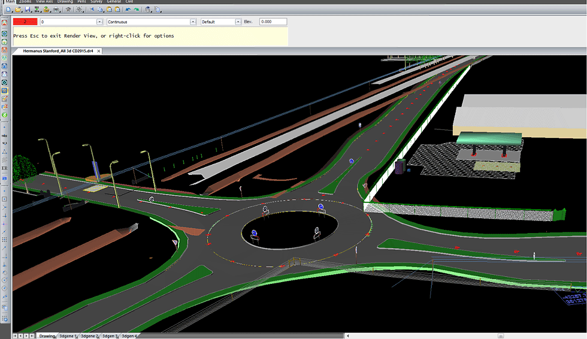

Currently I'm working on a project which is an Ambulance but insted of running on Roads it runs on the Divider or you can say Median. It does not include any driver and has the capacity to carry 3-4 people inside.
Traffic is the main problem these days and i see Ambulance getting struck in the traffic all the time. As there is no traffic on Divider(Road median) and the side railing of the roads. My design can easily run on them and without getting struck in the traffic it can save lives, Can send blood from one hospital to another and can arrive early during any road accident.
In big cities it can reach easily and fast with an assistant inside it to help you. My long term vision is to connect all the villages with it.
To collaborate and for full design blueprint click here
